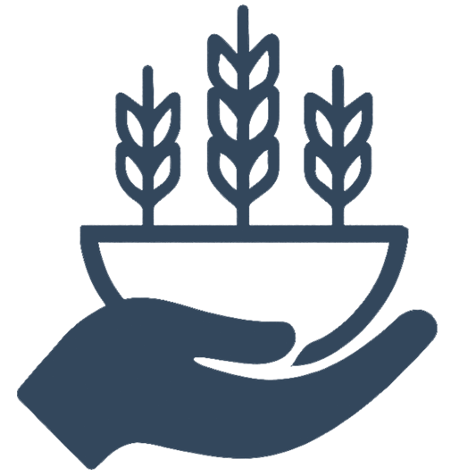

SDG 2: Zero Hunger Data
Understanding the global hunger crisis through key facts, statistics, and actionable insights
Global Hunger Crisis: Key Statistics
|  ASDY Foundation | Global Impact Data | Source & Actions | |
|---|---|---|---|
| 2023 Statistics | Impact Level | ||
|
|
735 million people affected |
Critical
Escalating due to conflict & climate change |
🔗 FAO SOFI Report 2023 |
|
|
1 in 5 children under 5 |
Severe
Lifelong physical & cognitive effects |
🔗 UNICEF Nutrition Data |
|
|
2.4 billion people affected |
High
Lack year-round access to adequate food |
🔗 FAO Hunger Map 2022 |
|
|
17% of total production |
Moderate
Wasted while millions go hungry |
🔗 UNEP Food Waste Report |
|
|
43% of workforce |
Gender Gap
Less access to land, credit & markets |
🔗 UN Women Food Security |
|
|
45 million children under 5 |
Critical
Life-threatening condition requiring urgent care |
🔗 UNICEF State of Children 2023 |
|
|
828 million at risk by 2030 |
Severe
Droughts, floods affecting crop yields |
🔗 IPCC Climate Report 2023 |
|
|
500 million farm families |
Positive
Produce 80% of food in developing countries |
🔗 IFAD Rural Development Report |